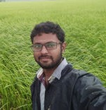

Staff
Rathnavel Pandian
Coordinator
Capacity Building and Research
Rathnavel is a researcher focused on rural livelihoods, biodiversity conservation and ecology, with a Master's degree in Ecology and Evolutionary Biology from University at Buffalo, USA.

Srinivasan Deenadaylan
Field Coordinator
Srinivasan is an organic farmer, bridging between consumers and producers, and coordinating activities on field. He also works on inclusion initiatives for kids with autism spectrum disorders.

Ganapathi Thamizhselvan
Ganapathi Thamizhselvan is an organic farmer in Thiruppukuzhi, Kancheepuram district. He is a seed conservator, actively managing the native paddy varieties seed conservation project.